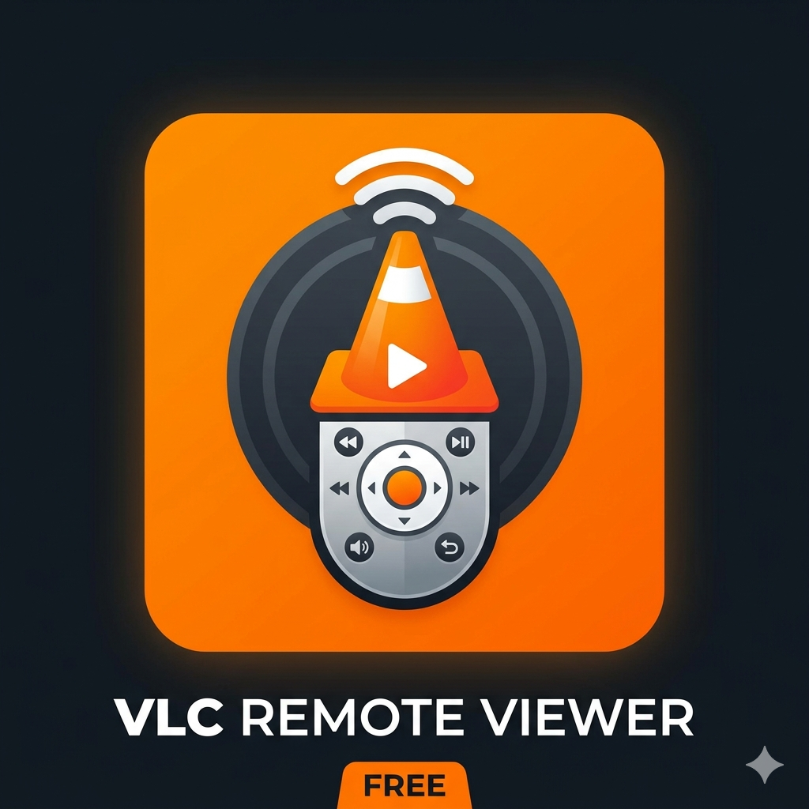

VLC Remote
A simple, lightweight app to remotely control VLC media player on your local network.
Features
Playback Control
Play, pause, stop, next, and previous track with ease.
Volume & Seeking
Adjust volume up to 200% and jump to any part of the track.
Playlist Management
View your current playlist and switch tracks instantly.
Support
Need help or found a bug? Please visit our GitHub Issues page to report problems or request new features.
Open Support Issues